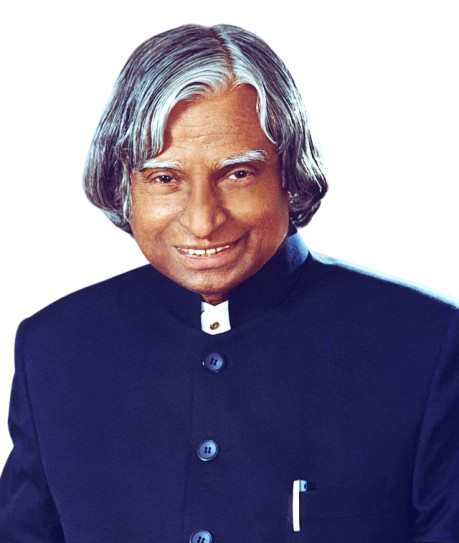

Born: October 15, 1931 | Died: July 27, 2015
"Dream, dream, dream. Dreams transform into thoughts and thoughts result in action."
Avul Pakir Jainulabdeen Abdul Kalam, widely known as APJ Abdul Kalam, was an Indian aerospace scientist and the 11th President of India from 2002 to 2007. Born and raised in Rameswaram, Tamil Nadu, he studied physics and aerospace engineering. Kalam played a crucial role in India's civilian space and military missile development, earning him the title of "Missile Man of India." He was also a key figure in India's Pokhran-II nuclear tests in 1998. Known for his humility, vision, and dedication to education, Kalam inspired millions through his speeches and books, particularly "Wings of Fire" and "Ignited Minds."